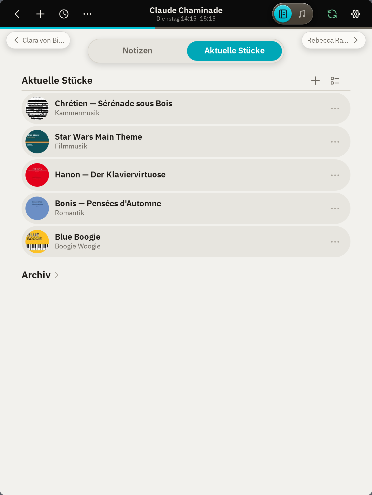
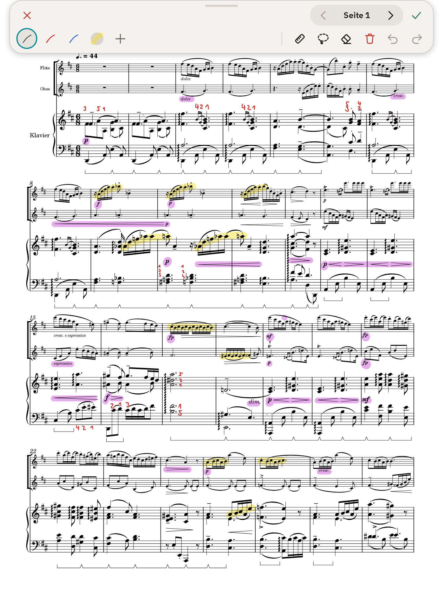
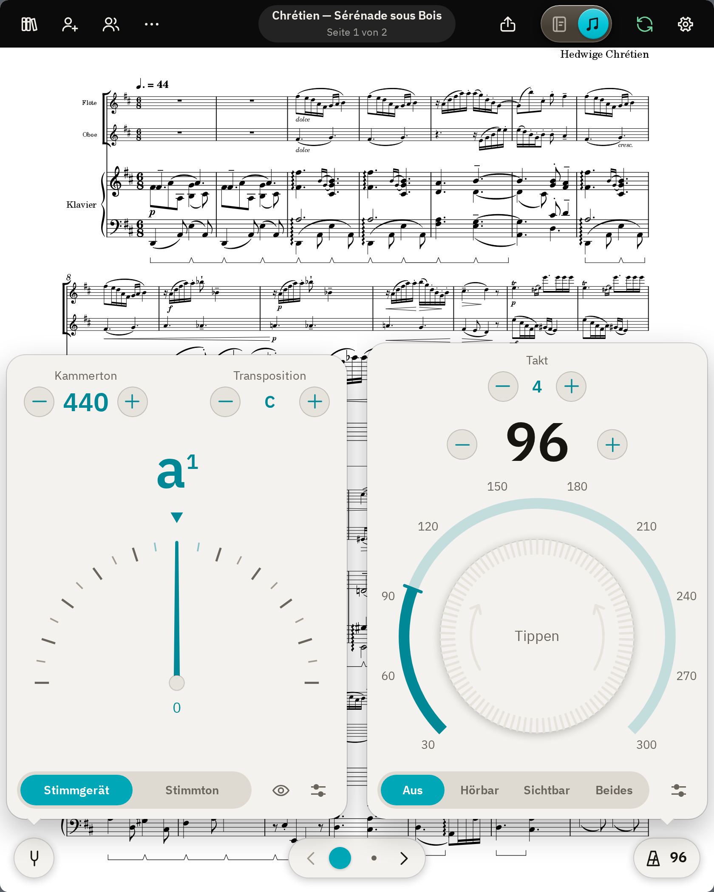
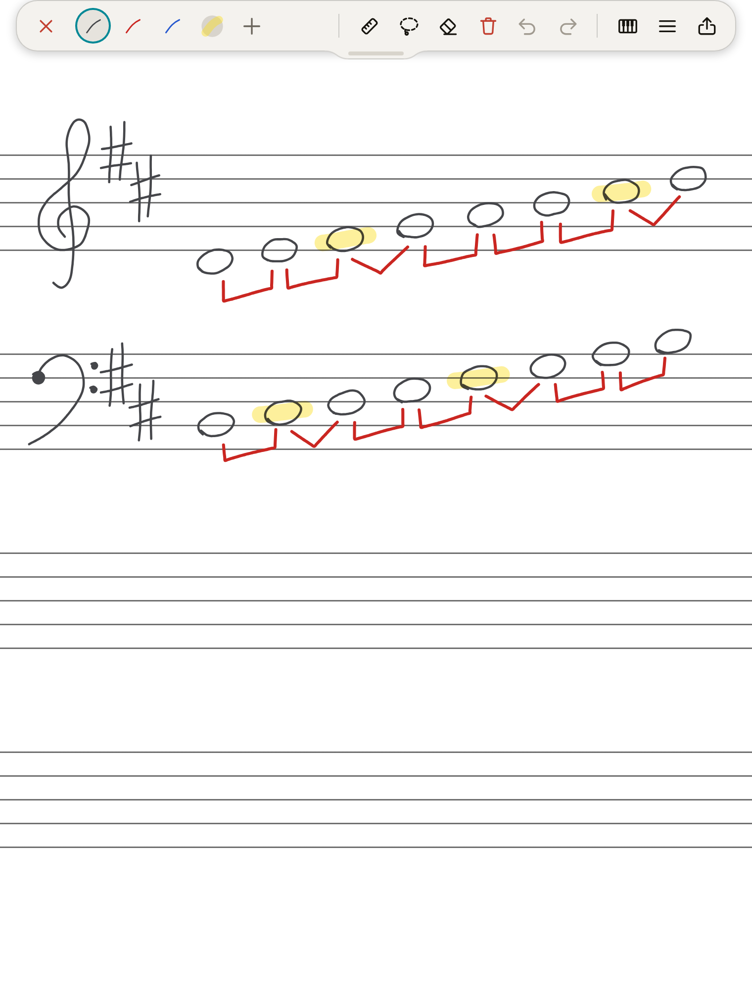

Notizen

Stundenplan
Alle Unterrichtstage im Überblick.

Lektion
Die Notizen der letzten und aktuellen Lektion auf einen Blick.
Noten

Zuteilen
Jedes Stück öffnet auf der Seite, an der die Schüler:in gerade arbeitet.

Anmerkungen
Direkt in die Noten zeichnen, für jede Schüler:in separat gespeichert.

Werkzeuge
Metronom, Stimmgerät und weitere nützliche Werkzeuge integriert.

Whiteboard
Platz zum Erklären und Skizzieren.
Daten
- Offline
- Läuft auch ohne Internet.
- Speicherort
- Auf deinem Gerät, mit optionaler Synchronisierung über deine eigene Cloud.
- Dateien
- Notizen in Markdown, Noten als PDF. Offen und lesbar auch ohne padago.
- Kein Konto
- Keine Registrierung, keine Werbung, kein Tracking.